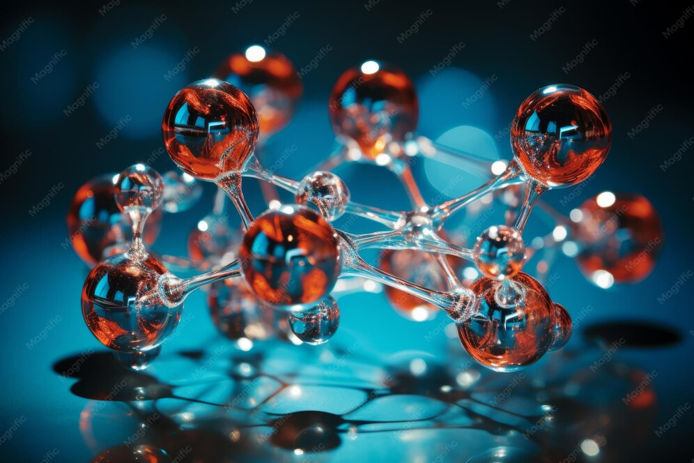
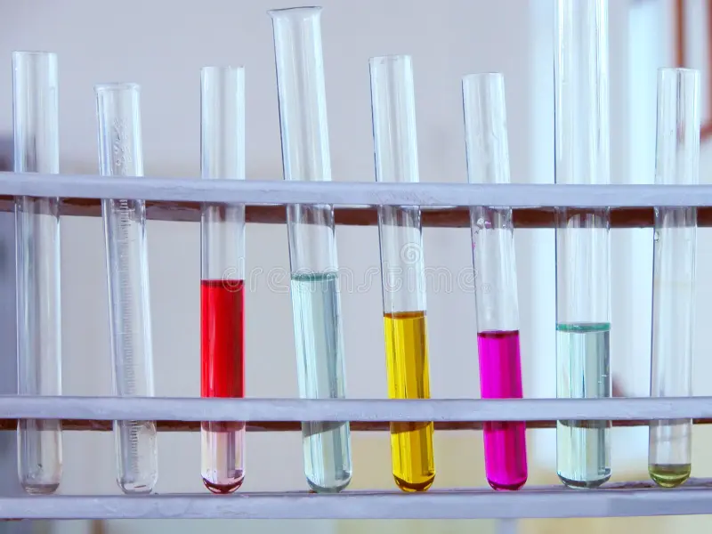

¿Qué es un Elemento Químico?
Un elemento químico es una sustancia pura que no se puede dividir en otras sustancias más simples. Todo lo que existe está hecho de elementos.
Hasta hoy se conocen 118 elementos. 94 se encuentran en la naturaleza y los demás fueron creados en laboratorios.

Ejemplo: El oro es un elemento, el oxígeno es un elemento, pero el agua NO es un elemento, porque está formada por 2 elementos: Hidrógeno + Oxígeno.
¿De qué está hecho un Elemento?
Cada elemento está formado por átomos iguales entre sí. El átomo es la parte más pequeña de un elemento.
Partes del átomo
- Protones: Tienen carga positiva. Están en el núcleo.
- Neutrones: No tienen carga. Están en el núcleo.
- Electrones: Tienen carga negativa. Giran alrededor del núcleo.
El número de protones es lo que hace que un elemento sea diferente de otro. Por ejemplo, si un átomo tiene 1 protón es Hidrógeno, si tiene 8 protones es Oxígeno.
Los 3 Estados de la Materia
Los elementos y todas las sustancias se pueden encontrar en 3 estados:
- Sólido: Tiene forma y volumen fijos. Sus partículas están muy juntas y no se mueven. Ejemplo: hielo, madera, hierro.
- Líquido: Tiene volumen fijo pero cambia de forma según el recipiente. Ejemplo: agua, aceite, leche.
- Gaseoso: No tiene forma ni volumen fijos. Sus partículas se mueven por todos lados. Ejemplo: vapor, oxígeno, humo.

¿Cómo cambian de estado?
- Fusión: De sólido a líquido. Ejemplo: el hielo se derrite.
- Evaporación: De líquido a gas. Ejemplo: el agua hirviendo.
- Condensación: De gas a líquido. Ejemplo: las gotitas en un vaso frío.
- Solidificación: De líquido a sólido. Ejemplo: el agua se hace hielo.
Elementos que usas todos los días
| Símbolo | Nombre | ¿Dónde lo encuentras? |
|---|---|---|
| O | Oxígeno | En el aire que respiras y en el agua |
| C | Carbono | En tu cuerpo, en la madera y en los diamantes |
| H | Hidrógeno | En el agua y en el Sol |
| Ca | Calcio | En tus huesos, dientes y en la leche |
| Fe | Hierro | En tu sangre y en los clavos |
Glosario rápido
- Átomo
- Es la unidad más pequeña de la materia. Todo está hecho de átomos.
- Molécula
- Es la unión de dos o más átomos. Ejemplo: H2O es agua.
- Elemento
- Es una sustancia pura que no se puede dividir. Ejemplo: Oro, Oxígeno.
- Compuesto
- Es la unión de dos o más elementos diferentes. Ejemplo: La sal es Sodio + Cloro.
- Símbolo químico
- Es la abreviatura del elemento. Ejemplo: O es Oxígeno, Fe es Hierro.